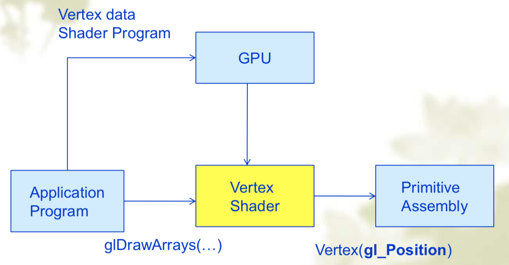

计算机图形学（二）Graphics Programming
1. OpenGL Evolution
start
- Silicon Graphics （SGI）revolutionized the graphics workstation by implementing the pipeline in hardware（1982）.
- The success of GL lead to OpenGL（1992）, a platform-independent API.
Modern OpenGL
流程图
graph LR A[Vertices]-->B[Vertex prcessor]-->C[Clipper and primitive assembler]-->D[Rasterizer]-->E[Fragment processor]-->PixelShaders: control GPU through programs
GPU does all rendering
OpenGL 3.1
- Totally shader-based
- No immediate mode
- 立即绘制（immediate mode） & 延迟绘制（retained mode）
Direct X
- windows only
- Advantages
- Better control of resources
- Access to high level functionality
- Disadvantages
- New versions not backward compatible
- Windows only
2. OpenGL Libraries
- OpenGL core library
- OpenGL Utility Library （GLU）
- Provides functionality in OpenGL core but avoids having to rewrite code
- OpenGL Utility Toolkit（GLUT）
- Provides functionality common to all window systems
- Code is portable but GLUT lacks the functionality of a good toolkit for a specific platform
- FreeGLUT
- GLEW
3. OpenGL Introduction
OpenGL Function
图元函数 Primitives：定义了系统可以显示的低级对象或最基本的实体（如Points, Line Segments, Triangles）
属性函数 Attribue：如图形颜色信息，光源属性，材质属性
变换函数 Transformations：
- Viewing 观察函数：定义各种视图
- Modeling 模型函数
控制函数 Control（GLUT）：与窗口系统通信
查询函数 Query：如照相机的参数或者帧缓存中的值
函数命名格式：
Lib name:gl, glu, glut, glew + Command name + {dimension: 2,3,4} + {parameter data type: sifdb(wb)} + {array identification: v} (parameter)
如 glUniform3f(x,y,z)
OpenGL State
- OpenGL is a state machine
- 状态机，即一个包含有限状态机的黑盒子
- OpenGL functions are of two types
- Primitive generating：定义图元
- State changing：改变机器内部的状态或者返回状态信息
- OpenGL is a state machine
Lack of Object Orientation
GLSL ：OpenGL Shaing Language
- Vertex Data
- Vertex Shader
- Tessellation Control Shader
- Tessellation Evalution Shader
- Geometry Shader
- Primitive Setup
- Clipping
- Rasterization
- Fragment Shader
4. A Simple Program
- Display, init, glutMainLoop
5. OpenGL Primitives
- GL_POINTS, GL_LINES, GL_LINE_STRIP, GL_TRIANGLES, GL_LINE_LOOP, GL_TRIANGLE_STRIP, GL_TRIANGLE_FAN（扇形）
- OpenGL will only display triangles
- Simple: 线没有交叉
- Convex 凸性：多边形任意两点连线上的点仍然在多边形内部
- Flat: 所有的点在相同的平面
6. OpenGL Shaders Programming
流程
- Vertex processing：计算每个顶点的颜色
- Clipping and primitive assembly：剪裁，图元计算
- Rasterization：光栅化，将图元转换为像素点
- Fragment Processing：计算每个像素点的颜色
Vertex Array Object（VAO）
- 绑定所有顶点数据（位置，颜色等）
- glBindVertexArray：和VBO能够交互
Vertex Buffer Object （VBO）
Buffers objects allow us to transfer large amount of data to the GPU
Need to create, bind and identify data
glGenBuffers(NumBuffers, Buffers); glBindBuffer(GL_ARRAY_BUFFER, Buffers[ArrayBuffer]); glBufferData(GL_ARRAY_BUFFFER, sizeof(vertices), vertices);
执行模型图
顶点着色

片元着色